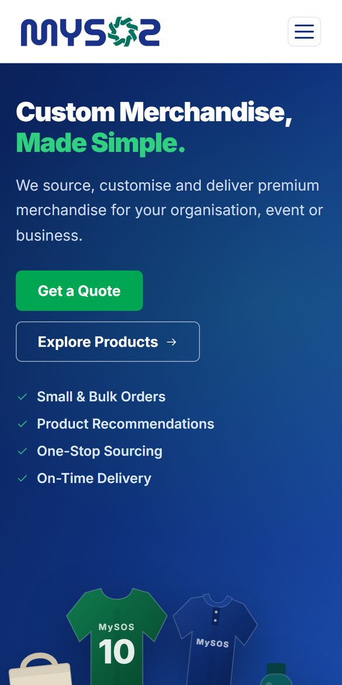
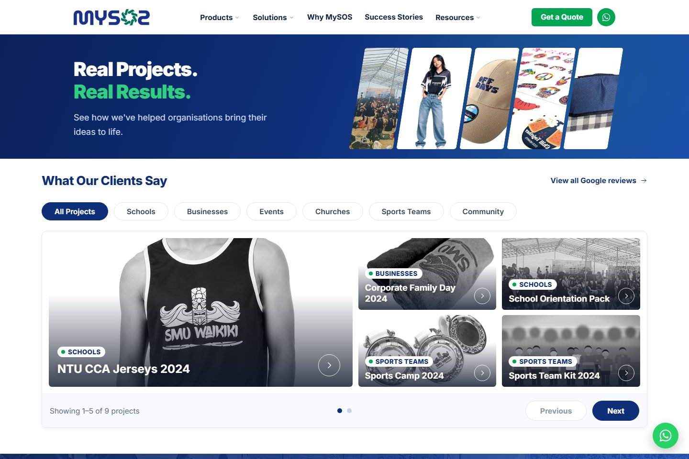

03 / 04
Merchandise · Website · Quote tool
MySOS
A clearer website and a faster way to price orders for a custom merchandise company.
MySOS website


Sales quote tool

Success stories

What they needed
Give a custom merchandise company a trustworthy website—and help its sales team send quotes faster than working through a complicated spreadsheet.
- 8
- price levels by order size
- 4
- printing styles priced automatically
- 1
- price list shared by the website and the quote tool
The key idea
The website and the sales team’s quote tool use the same list of products and prices. Customers see simple “from” prices, the sales team gets exact quotes, and a price only ever needs updating in one place.
Read the full story
The problem
Pricing was stuck in a hard-to-read spreadsheet.
T-shirts, polos, caps, jerseys, and custom-made items are all priced differently, with printing, extras, and order size on top. Quotes took too long, and the old website left customers with questions.
What we did
A helpful website and a simple quote tool.
The new website shows the products, the kinds of customers MySOS serves, past projects, real Google reviews, and the organisations it works with. The quote tool guides a salesperson through each order step by step.
The result
Quotes in minutes, and a website the owner controls.
Sales staff put together quotes with several items, see the cost and profit as they go, and download a ready-to-send Excel file. The owner can change headlines, wording, and main pictures through Website Manager.
Website design · Quote tool · Pricing